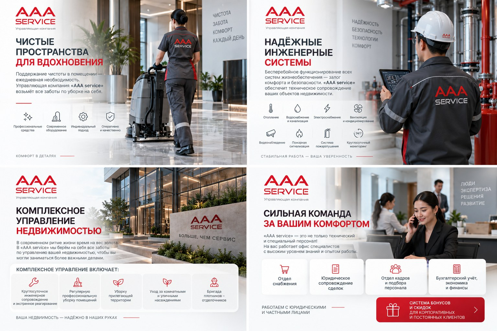

01
Бизнес-центры и офисы
Клининг, инженерные системы, эксплуатационные задачи и поддержание стандартов рабочего пространства.
Коммерческая недвижимостьОт ежедневной чистоты и технического контроля до полного хозяйственного управления — с единой координацией и понятной ответственностью.

Методика и состав работ подбираются под тип помещения, материалы, режим эксплуатации и требования к результату.
Подробнее →Поддерживающий клининг офисов, домов и квартир, а также глубокая уборка по согласованному регламенту.
Работы после ремонта, строительства и сезонная подготовка помещений.
Мебель, ковролин, текстиль и специализированная обработка поверхностей.
Круглосуточный мониторинг систем здания и работа специалистов с профильной технической подготовкой.
Подробнее →Вентиляция, кондиционирование и теплоснабжение.
Электроснабжение, водопровод, канализация и контроль оборудования.
Пожарная сигнализация, пожаротушение, видеонаблюдение и контроль доступа.
Одна команда закрывает инженерные, клининговые, хозяйственные и административные процессы.
Подробнее →Техническое сопровождение, экстренное реагирование и координация подрядчиков.
Уборка прилегающей территории, уход за комнатными и уличными растениями.
Снабжение, отделочные работы, кадровая и административная поддержка.
Подход строится не вокруг фиксированного пакета, а вокруг состава инженерных систем, графика работы объекта и требований к уровню сервиса.
Фиксируем помещения, оборудование, инженерную инфраструктуру, режим эксплуатации и критичные точки.
Определяем состав работ, периодичность, зоны ответственности и необходимые ресурсы команды.
Организуем плановые работы, клининг, техническое сопровождение и хозяйственные процессы.
Отслеживаем качество, состояние систем и выполнение регламентов, корректируя сервис при необходимости.
AAA SERVICE может объединить несколько направлений в единую модель обслуживания — от одной услуги до полного хозяйственного сопровождения.
Клининг, инженерные системы, эксплуатационные задачи и поддержание стандартов рабочего пространства.
Коммерческая недвижимостьУборка, техническое сопровождение и комплексные хозяйственные задачи для частной недвижимости.
Частные клиентыРегулярное обслуживание помещений с учетом потока посетителей и интенсивности эксплуатации.
Сервис по регламентуСопровождение вентиляции, электроснабжения, водоснабжения, противопожарных и систем безопасности.
Техническая эксплуатацияДля предварительной модели достаточно базовой информации об объекте и перечне задач.
Да. Обслуживание может начинаться с клининга, одной группы инженерных систем или отдельного хозяйственного блока и расширяться по мере необходимости.
На расчет влияют площадь и тип объекта, режим работы, состав инженерных систем, периодичность услуг и требуемый состав команды.
Да. В этом случае процессы координируются как единая сервисная система, а заказчику проще контролировать качество и ответственность.
Достаточно кратко описать объект, площадь, местоположение, основные задачи и желаемый формат обслуживания.
Опишите задачу — подготовим состав работ и оптимальную модель обслуживания.